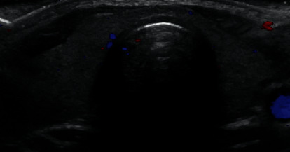
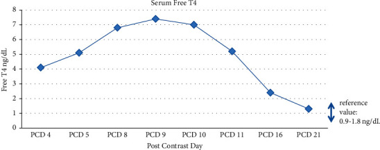

1898 — Nhiễm độc giáp do iod sau cản quang ở trẻ (Jod–Basedow) / Iodine-induced thyrotoxicosis
Tags: pattern:cuong-giap pattern:qua-tai-iod pattern:tsh-bi-uc-che vung:tuyen-giap score:Burch-Wartofsky protocol:CT-can-quang protocol:sieu-am-tuyen-giap protocol:xet-nghiem-chuc-nang-giap
Mức chắc chắn (certainty): tổng hợp y văn (literature synthesis) — ghép 2 ca nguyên văn ở trẻ (Case Rep Endocrinol 2021, PMC8632428, CC BY 4.0: 17 tuổi sau CT bụng; SAGE Open Med Case Rep 2024, PMC11624525, CC BY-NC 4.0: 15 tuổi sau CTA vành) với 1 ca người lớn nặng (Cureus 2022, PMC9170361, CC BY 3.0: bướu giáp 9 cm, phải thay huyết tương) và 1 tổng quan liều iod. Số nào nguồn không đưa thì ghi "chưa rõ".
Câu chốt: một lần chụp CT có cản quang đưa vào cơ thể 13.500 µg iod tự do + 15–60 g iod gắn kết — ca dưới đây nhận 78 mL Omnipaque 300 ≈ 23 g iod hữu cơ, tức ~21.000 lần mức chịu đựng 1.100 µg/ngày. Hệ quả nghịch lý: TSH < 0,0008 µIU/mL, fT4 đỉnh 7,4 ng/dL (tham chiếu 0,9–1,8) nhưng siêu âm tuyến giáp hoàn toàn bình thường — nên "giáp bình thường trên hình ảnh" không loại trừ Jod–Basedow, và xạ hình sau cản quang là âm giả vì chính liều iod đã ức chế bắt xạ.
1. Tổng quan bệnh học – cơ chế hình ảnh
1.1 Cơ chế: hai mặt của cùng một van an toàn
- Hiệu ứng Wolff–Chaikoff: iod thừa ức chế thyroid peroxidase (TPO) → giảm tổng hợp T3/T4. Bình thường tuyến "thoát" ức chế trong ~48 giờ nhờ giảm biểu hiện NIS (Na/I symporter), đưa lượng iod vào nội bào về mức cũ (PMC8632428).
- Jod–Basedow (Jod-Basedow phenomenon, JBP) là mặt ngược lại: ở mô giáp tự trị (nhân độc, bướu đa nhân, vùng thiếu iod trước đó), tế bào không giảm bắt iod → bể iod nội bào mở rộng → tổng hợp hormone tăng liên tục → nhiễm độc giáp, không có pha thoát.
- Vì vậy cùng một liều cản quang cho hai kết cục trái ngược: trẻ non tháng/thiếu enzym → suy giáp (xem 1815); người có mô giáp tự trị → cường giáp.
- Trẻ em không phải ngoại lệ: ca 17 tuổi không có tiền sử bệnh giáp, kháng thể TSI/anti-Tg/anti-TPO đều âm, chức năng giáp 2 năm trước bình thường (TSH 1,165) — vẫn mắc JBP sau cản quang. Tác giả nghi nhiễm virus (rhinovirus/enterovirus, EBV) là yếu tố khởi phát trên nền nhạy cảm (PMC8632428).
1.2 TẠI SAO hình ảnh lại quan trọng trong một bệnh "nội tiết" (vật lý + logic)
- Cản quang iod nhìn thấy được vì Z = 53, K-edge 33,2 keV — đúng dải năng lượng tia X chẩn đoán, nên hấp thụ quang điện tăng vọt: iod đậm hơn xương trên cửa sổ mô mềm. Hệ quả: chính phim CT gây bệnh cũng là phim phát hiện yếu tố nguy cơ — ca người lớn có bướu giáp 9 cm đẩy lệch khí quản chỉ được nhận ra khi đọc lại CTA đầu–cổ (PMC9170361).
- Siêu âm phản ánh giải phẫu, không phản ánh chức năng. Trong JBP tuyến có thể bình thường về kích thước, hồi âm, tưới máu (ca 17 tuổi: isthmus 0,2 cm, thùy phải 2,3 × 4,3 × 0,9 cm, thùy trái 1,3 × 4,3 × 1,1 cm, không tăng sinh mạch) — vì hormone đang tràn ra từ mô giáp không viêm, không tăng sinh. Đây là điểm khác biệt cốt lõi với Graves (tuyến to, giảm hồi âm, tăng mạch "địa ngục") và viêm giáp (đau, giảm hồi âm, giảm mạch).
- Xạ hình 99mTc/RAIU bị chính liều iod làm mù. Bể iod mở rộng cạnh tranh với iod phóng xạ và TSH đã bị ức chế → bắt xạ thấp giả tạo, không phân biệt được với viêm giáp. Ca 17 tuổi hoãn xạ hình vì lý do này (PMC8632428) — bỏ qua chi tiết đó là nguyên nhân hay gặp nhất của "chẩn đoán sai hướng".
1.3 Ngưỡng định lượng nằm lòng
| Đại lượng | Con số | Nguồn |
|---|---|---|
| Iod trong một liều cản quang TM chuẩn | 13.500 µg iod tự do + 15–60 g iod gắn kết | PMC8632428, PMC9170361 |
| Ca 17 tuổi: 78 mL Omnipaque 300 | ≈ 23 g iod hữu cơ (~21.000 × mức chịu đựng/ngày) | PMC8632428 |
| Mức chịu đựng iod/ngày (người lớn, ICCIDD) | 1.100 µg | PMC8632428 |
| Nhu cầu iod/ngày (người lớn) | ~150 µg | PMC8632428 |
| Thời gian thoát Wolff–Chaikoff | ~48 giờ | PMC8632428 |
| Thời gian tiềm tàng của JBP | vài ngày → vài tuần; đã ghi nhận sớm nhất ngày 1 sau cản quang | PMC8632428 |
| Ca 17 tuổi: fT4 đỉnh (PCD 9) | 7,4 ng/dL (0,9–1,8) | PMC8632428 |
| Ca 17 tuổi: TSH | < 0,0008 µIU/mL (0,6–4,8) | PMC8632428 |
| Ca 17 tuổi: thyroglobulin | 274 ng/mL (0,8–29,4) | PMC8632428 |
| Ca 17 tuổi: iod huyết thanh | 181 µg/L (PCD 10) → 79 µg/L (PCD 22) | PMC8632428 |
| Burch–Wartofsky lúc có triệu chứng | 15 điểm (nguy cơ bão giáp thấp) | PMC8632428 |
| Ca 15 tuổi: TSH / fT4 / FT3 | 0,05 µIU/mL / 29,9 pmol/L (11,5–22,5) / 21,14 pmol/L (3,5–6,5) | PMC11624525 |
| Ca 15 tuổi: EF lúc vào → ngày 3 | 46% → 55% | PMC11624525 |
| Ca người lớn: fT4 trước → sau cản quang 8 ngày | 0,46 → 4,07 ng/dL; TSH < 0,015 mIU/L | PMC9170361 |

Siêu âm Doppler màu tuyến giáp ở ca 17 tuổi (PCD 7): isthmus 0,2 cm; thùy phải 2,3 × 4,3 × 0,9 cm; thùy trái 1,3 × 4,3 × 1,1 cm; hồi âm trong giới hạn bình thường, không tăng sinh mạch — tức hình ảnh bình thường dù fT4 đang 6,8 ng/dL. Nguồn: Apsan J et al., Case Rep Endocrinol 2021 (PMC8632428), Fig. 2, CC BY 4.0.2. Mẫu hình + chẩn đoán phân biệt theo vị trí (gamut)
2.1 Mẫu hình cần nhận ra: "cường giáp khởi phát cấp sau một can thiệp"
Ba câu hỏi theo thứ tự:
- Có phơi nhiễm iod không? Cản quang TM/uống, amiodarone, povidone-iodine trên da niêm, thực phẩm/nước biển, thuốc ho long đờm chứa iod. Ghi mốc thời gian so với khởi phát — JBP điển hình ngày 1 đến vài tuần.
- Tuyến giáp có "bệnh nền" không? Bướu giáp/nhân trên siêu âm, tiền sử bệnh giáp, vùng thiếu iod, suy thận (giảm thải iod).
- Có dấu hiệu viêm/ tự miễn không? Đau tuyến, TRAb dương, kháng thể anti-TPO/anti-Tg, tuyến to lan tỏa → nghĩ Graves/viêm giáp hơn là JBP.
2.2 Gamut theo bối cảnh (không theo vị trí giải phẫu — bệnh là bệnh toàn thân)
- Sau cản quang iod: Jod–Basedow (nhân độc/bướu đa nhân/vùng thiếu iod); bão giáp trên nền Graves chưa chẩn đoán; viêm giáp bán cấp trùng dịp (không liên quan cản quang); cường giáp giả do thuốc (levothyroxine, biotin gây nhiễu xét nghiệm).
- Sau amiodarone: type 1 (tăng tổng hợp, Doppler tăng mạch) vs type 2 (viêm hủy, Doppler giảm mạch) — xem 940 về nhân độc; AIT chưa có bài riêng trong thư viện.
- Trẻ có bướu giáp: nhân độc tự trị (AFTN), bướu đa nhân, hội chứng McCune–Albright (nốt nóng), Graves, viêm giáp Hashitoxicosis.
- Trẻ không bướu giáp, tuyến bình thường trên siêu âm: JBP là chẩn đoán loại trừ — phải âm TRAb, không đau, có mốc phơi nhiễm iod, và tự khỏi khi iod được thải.
2.3 Mnemonic IODINE (dùng khi bàn giao ca)
Iatrogenic contrast/amiodarone · Ongoing autonomous nodule · Deficient-iodine region · Inflammation (viêm giáp) · Nodular goiter · Escalating iodine dose.
3. Bảng so sánh phân biệt (ma trận đối chiếu)
| Thực thể (entity) | Hình ảnh điển hình | Chốt vào (rule-in) | Chốt loại (rule-out) | Gợi ý xác nhận |
|---|---|---|---|---|
| Jod–Basedow (JBP) | Siêu âm: tuyến bình thường hoặc bướu/nhân, không tăng mạch; xạ hình bắt xạ thấp (nhưng âm giả ngay sau cản quang) | Mốc phơi nhiễm iod rõ + TSH bị ức chế + fT4/fT3 tăng + TRAb âm + tuyến không đau | TRAb dương, tuyến to lan tỏa giảm hồi âm, tăng mạch → Graves; đau tuyến → viêm giáp | TSH/fT4 ngày 3–7; iod huyết thanh; theo dõi tự khỏi 2–8 tuần |
| Graves | Tuyến to lan tỏa, giảm hồi âm, tăng sinh mạch ("thyroid inferno"); xạ hình bắt xạ lan tỏa tăng | TRAb dương + tuyến to lan tỏa + bắt xạ tăng | TRAb âm, tuyến bình thường, bắt xạ thấp → JBP/viêm giáp | TRAb, siêu âm Doppler, xạ hình |
| Viêm giáp bán cấp | Tuyến đau, giảm hồi âm khu trú, giảm mạch; xạ hình bắt xạ thấp | Đau tuyến khi ấn + ESR/CRP tăng + cường giáp thoáng qua rồi suy giáp | Không đau, không viêm → JBP; TRAb dương → Graves | ESR/CRP, siêu âm, theo dõi 3 pha |
| Hashitoxicosis | Tuyến giảm hồi âm không đều, giảm thể tích, có thể teo | anti-TPO rất cao + bướu Hashimoto + cường giáp nhẹ thoáng qua | anti-TPO âm → không phải Hashimoto | anti-TPO/anti-Tg, siêu âm |
| Nhân độc tự trị (AFTN) | Nhân đặc, giàu mạch, phần còn lại của tuyến bị ức chế; xạ hình nhân nóng đơn độc | Nhân nóng + phần giáp còn lại bắt xạ thấp | Bướu đa nhân, tuyến bình thường → JBP | Xạ hình sau khi hết tải iod; siêu âm |
| Cường giáp do amiodarone type 2 | Tuyến bình thường, giảm mạch; khởi phát sau nhiều tháng dùng thuốc | Tiền sử amiodarone + Doppler giảm mạch + kháng giáp kém đáp ứng | Tăng mạch, bắt xạ tăng → type 1 | Doppler, RAIU (sau đủ thời gian), thử corticoid |
Cạm bẫy ma trận: không có cột "xạ hình" nào dùng được trong 4–8 tuần đầu sau cản quang. Ghi rõ "hoãn xạ hình" thay vì đọc một kết quả thấp giả tạo.
4. Protocol chụp + hệ phân độ/điểm chuẩn hóa
4.1 Trước khi tiêm cản quang iod ở trẻ
- Hỏi 3 câu: bướu giáp/nhân đã biết? tiền sử cường giáp/Graves? đang dùng amiodarone hay thuốc chứa iod?
- Xét nghiệm nền khi có bất kỳ câu "có": TSH + fT4. Nếu TSH bị ức chế, hoãn cản quang không cấp cứu và chọn thay thế: siêu âm, MRI không cản từ, X-quang.
- Không hoãn khi chỉ định là cấp cứu (tắc mạch, chấn thương, nghi ung thư) — nhưng phải ghi nhận phơi nhiễm và hẹn xét nghiệm giáp ngày 3–7.
4.2 Sau cản quang: lịch theo dõi có ngưỡng
- Ngày 3–7: TSH, fT4, fT3 nếu có triệu chứng (sốt, nhịp nhanh, vã mồ hôi, run, sụt cân, đau bụng không rõ nguyên nhân).
- Tuần 4–6: lặp TSH/fT4 để xác nhận tự khỏi (ca 17 tuổi bình thường ở PCD 21; ca 15 tuổi bình thường ở 6 tháng).
- Siêu âm tuyến giáp: đầu dò linear 12–15 MHz, đo 3 chiều mỗi thùy + isthmus, thể tích = 0,479 × D1 × D2 × D3; ghi nhân, hồi âm, tưới máu. Siêu âm bình thường không loại trừ JBP.
- Xạ hình 99mTc/RAIU: hoãn cho tới khi bể iod về bình thường (y văn nhi chưa có ngưỡng thống nhất — thực hành thường chờ vài tuần); chỉ dùng khi cần phân biệt nhân độc.
- CT ngực/đầu cổ có cản quang: đọc lại khí quản, tuyến giáp, trung thất — bướu giáp chèn ép là yếu tố nguy cơ và là nguyên nhân không thể rút ống (ca người lớn 9 cm, đẩy lệch khí quản).
4.3 Thang điểm Burch–Wartofsky (BWT) — dùng để quyết định nơi điều trị
| Điểm | Ngưỡng xử trí |
|---|---|
| < 25 | Cường giáp chưa biến chứng: điều trị ngoại trú/ theo dõi |
| 25–44 | "Bão giáp đe dọa": nhập viện, chẹn beta, kháng giáp, tìm yếu tố khởi phát |
| ≥ 45 | Bão giáp: ICU, thay huyết tương nếu cần (ca người lớn cần 3 lần lọc huyết tương) |
- Ca 17 tuổi: BWT 15 → điều trị nội khoa thường quy (methimazole + hydrocortisone 100 mg mỗi 8 giờ + propranolol 40 mg mỗi 8 giờ).
- Điểm BWT không thay thế đánh giá tim: ca 15 tuổi EF 46%, men tim và troponin tăng, ST chênh lên — cường giáp làm nặng thêm viêm cơ tim, dù không có triệu chứng "nhiễm độc giáp" kinh điển.
flowchart TD
A[Trẻ sau cản quang iod: nhịp nhanh, sốt, run, sụt cân] --> B[TSH + fT4 + fT3]
B --> C{TSH bị ức chế và fT4 hoặc fT3 tăng?}
C -->|Không| D[Tìm nguyên nhân khác: nhiễm trùng, đau, lo lắng, thiếu máu]
C -->|Có| E[Siêu âm tuyến giáp + TRAb + anti-TPO]
E --> F{Tuyến bình thường, TRAb âm, không đau?}
F -->|Có| G[Jod-Basedow: ngừng mọi nguồn iod, theo dõi 1-2 tuần]
F -->|Không| H[Graves hoặc viêm giáp: TRAb dương hoặc tuyến đau giảm hồi âm]
G --> I{BWT >= 45 hoặc suy tim loạn nhịp?}
I -->|Có| J[ICU: chẹn beta, corticoid, kháng giáp, cân nhắc lọc huyết tương]
I -->|Không| K[Chẹn beta triệu chứng, kháng giáp nếu nặng, hẹn lại TSH tuần 4-6]
5. Biến thể bình thường và cạm bẫy
- "Tuyến giáp bình thường" trên siêu âm là bình thường thật — không phải bằng chứng chống cường giáp. JBP không viêm, không tăng sinh mạch; đừng vì thế mà bỏ qua TSH đã bị ức chế.
- TSH nền bình thường trước đó không loại trừ: ca 17 tuổi có TSH 1,165 hai năm trước và không có tiền sử bệnh giáp.
- Sốt + nhịp nhanh sau mổ bị gán cho nhiễm trùng: ca 17 tuổi được điều trị kháng sinh 4 ngày trước khi đo giáp lần đầu — mẫu hình "sốt sau can thiệp" phải gồm cả tuyến giáp trong chẩn đoán phân biệt.
- Xạ hình/RAIU ngay sau cản quang = âm giả (bể iod mở rộng + TSH bị ức chế). Ghi "hoãn" trong phiếu, không ghi "bắt xạ thấp".
- Bỏ sót bướu giáp chèn khí quản khi chỉ đọc mạch máu trên CTA: ca người lớn 9 cm gây khó rút ống, phải cắt thùy giáp; giải phẫu này nằm trong cửa sổ mô mềm, không phải cửa sổ mạch.
- Nhiễu xét nghiệm do biotin (vitamin B7 liều cao) làm TSH giả thấp, fT4 giả cao — hỏi thuốc bổ trước khi kết luận cường giáp.
- Trẻ có bệnh tim nền: cường giáp nhẹ cũng có thể gây loạn nhịp/suy tim; EF giảm 46% trong ca 15 tuổi là lý do phải nhập viện theo dõi, không chỉ "theo dõi ngoại trú".
6. Tự lượng giá — Blind Quiz
Ca 1 — Nam 17 tuổi, khỏe mạnh trước đó, đau bụng phải, được chụp CT bụng có cản quang rồi mổ viêm ruột thừa. Ngày hậu phẫu 2–4: sốt, đỏ bừng, mệt, nhịp tim 100–110/phút.
- Hỏi: (1) Mô tả tuyến giáp trên siêu âm. (2) Ba chẩn đoán phân biệt cho cường giáp cấp ở trẻ. (3) Xét nghiệm nào chốt hướng Jod–Basedow, và vì sao không làm xạ hình lúc này?
Bấm để hiện đáp án (findings + chẩn đoán)
- Findings: tuyến giáp không to, hồi âm đồng nhất bình thường, không tăng sinh mạch; isthmus 0,2 cm, thùy phải 2,3 × 4,3 × 0,9 cm, thùy trái 1,3 × 4,3 × 1,1 cm.
- Chẩn đoán: Jod–Basedow sau 78 mL Omnipaque 300 (≈ 23 g iod) — fT4 đỉnh 7,4 ng/dL, TSH < 0,0008 µIU/mL, thyroglobulin 274 ng/mL, iod huyết thanh 181 µg/L (PCD 10); TRAb/anti-TPO/anti-Tg âm; BWT 15.
- Vì sao không xạ hình: chính liều iod đã mở rộng bể iod và ức chế TSH → bắt xạ thấp giả tạo, không phân biệt được JBP với viêm giáp; ca này đã hoãn xạ hình.
- Diễn biến: bình thường hoá ở PCD 21 (fT4 1,3 ng/dL, TSH 0,822 µIU/mL).
- Nguồn: Apsan J et al., Case Rep Endocrinol 2021 (PMC8632428), Fig. 2, CC BY 4.0.
Ca 2 — Nam 15 tuổi, đau ngực sau nhiễm virus hô hấp; men tim và troponin tăng, ST chênh lên; CTA vành bình thường.

- Hỏi: (1) Đường cong fT4 này nói gì về thời điểm đỉnh và thời gian tự khỏi? (2) Nếu bệnh nhân này có EF 46%, quyết định điều trị khác gì ca 1? (3) Vì sao không dùng kháng giáp trong ca này?
Bấm để hiện đáp án (findings + chẩn đoán)
- Findings: fT4 tăng dần từ 4,1 ng/dL (PCD 4) lên đỉnh 7,4 ng/dL (PCD 9) rồi giảm về 1,3 ng/dL (PCD 21) — đỉnh ở tuần thứ nhất, tự khỏi trong ~3 tuần.
- Ca 15 tuổi (ảnh minh hoạ đường cong từ ca 17 tuổi): TSH 0,05 µIU/mL, fT4 29,9 pmol/L, FT3 21,14 pmol/L, EF 46% → 55% ngày 3; điều trị chế độ ít iod + metoprolol, không kháng giáp, chức năng giáp bình thường ở 6 tháng.
- Vì sao không kháng giáp: JBP thường tự giới hạn khi iod được thải; kháng giáp chỉ dùng khi nặng/kéo dài, và ở ca 17 tuổi methimazole gây tăng transaminase + phát ban da bong buộc phải ngừng.
- Nguồn ảnh: Apsan J et al., Case Rep Endocrinol 2021 (PMC8632428), Fig. 1, CC BY 4.0. Số liệu ca 2: Lai TF et al., SAGE Open Med Case Rep 2024 (PMC11624525), CC BY-NC 4.0.
Câu 3 — Tự luận ngắn: Một trẻ 12 tuổi có bướu giáp, cần CT bụng cấp. TSH 0,02 µIU/mL. Bạn làm gì trước khi tiêm cản quang, và ghi gì vào phiếu?
Bấm để hiện đáp án
- Trước tiêm: xác nhận chỉ định cấp cứu; nếu không cấp cứu → chọn siêu âm/MRI không cản từ; nếu phải tiêm → chẹn beta nếu nhịp nhanh, hỏi kỹ amiodarone/iod nguồn khác, và hẹn TSH/fT4 ngày 3–7.
- Ghi phiếu: "Phơi nhiễm iod do cản quang ngày…; TSH 0,02 trước tiêm; hoãn xạ hình tuyến giáp; theo dõi Jod–Basedow".
- Vì sao: bướu giáp + TSH bị ức chế = mô giáp tự trị, nguy cơ JBP cao nhất; ngưỡng BWT ≥ 45 đổi nơi điều trị.
Bài liên quan chéo
- 1815 – Suy giáp do quá tải iod ở sơ sinh (mặt ngược lại của cùng cơ chế Wolff–Chaikoff)
- 940 – Đốt nhiệt nhân giáp độc: RFA vs I-131 (nhân độc tự trị — nền của JBP)
- 230 – Tuyến giáp & hạch cổ (siêu âm giáp, phân tầng hạch)
- 933 – An toàn thuốc cản quang (chỉ định, liều, biến cố sau tiêm)
Không dùng để chẩn đoán độc lập khi chưa có người hướng dẫn.